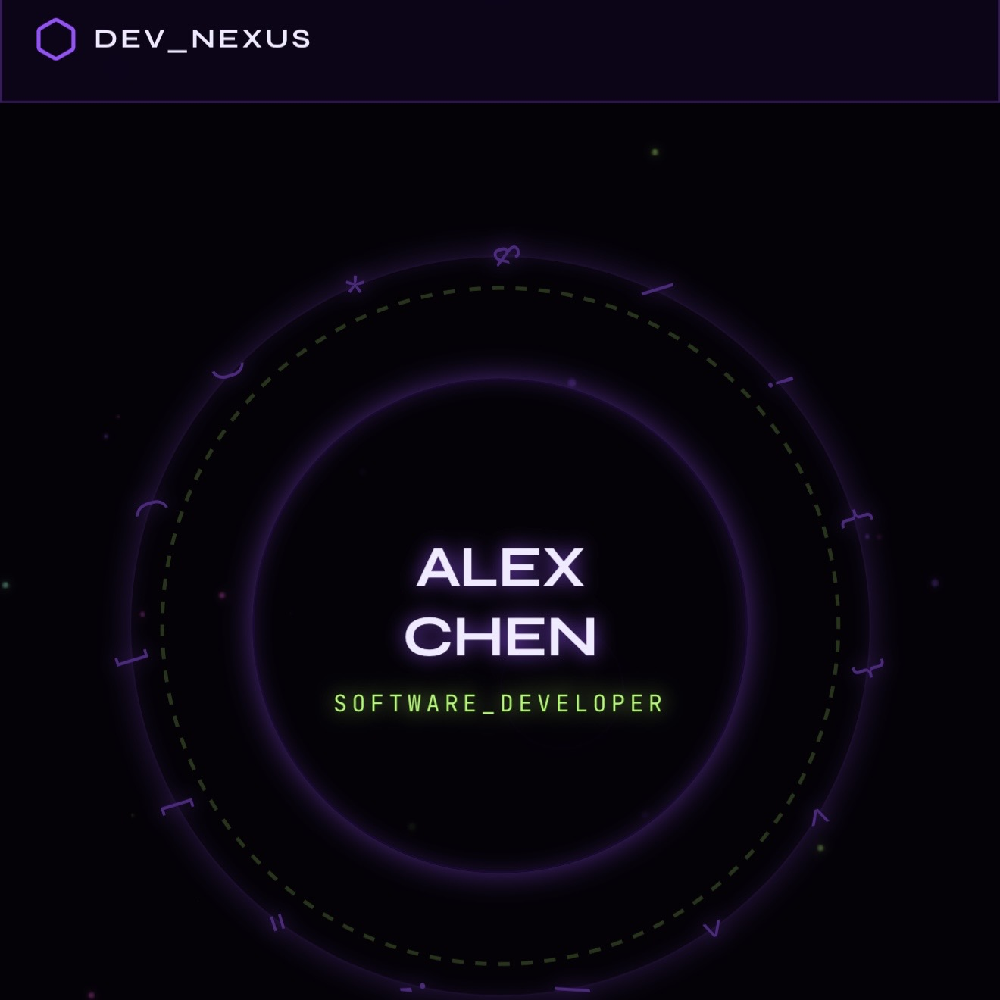

Dev NexusDeveloper & Systems
Dev Nexus
A connected technical hub with orbiting interface details, a centered introduction, and a sleek systems-dashboard atmosphere.
At a glance
About This Theme
A connected technical hub with orbiting interface details, a centered introduction, and a sleek systems-dashboard atmosphere.
- Category
- Developer & Systems
- Format
- Standalone static website
- Hosting
- GitHub Pages
Design details
Theme Highlights
- Distinct visual identity designed around the theme concept
- Responsive static presentation for GitHub Pages
- Dedicated live demo and standalone repository
- Portfolio-ready structure for projects, skills, and experience
View the project
Explore the Theme
Open the finished website or review the complete source files.